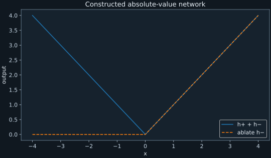
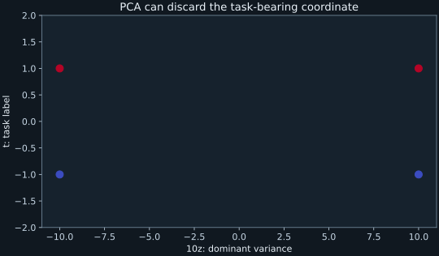
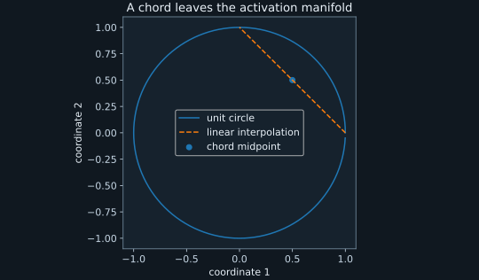
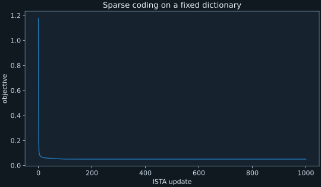
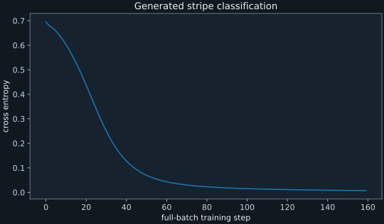
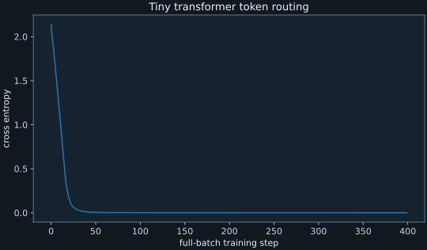

Run the supplied experiments
These thirteen experiments are original teaching fixtures. Eleven use exact arithmetic, constructed representations, or analytic objectives; two train small neural networks on generated data. Their purpose is to make distinctions in the essays testable. They are not reproductions of Goodfire's full-scale models, datasets, or published performance.
Open PowerShell in the archive's top directory. The experiments require compatible Python, NumPy, PyTorch, and Matplotlib packages; see the reference runtime inventory. The scripts use CPU execution, two PyTorch threads, and seed 1729. They download nothing and call no APIs. Static reading does not require Python.
python docs\learning\labs\run_lab.py --lab all
python docs\learning\labs\run_lab.py --lab geometry
python docs\learning\labs\run_lab.py --helpEach run writes a receipt to learning/labs/results/NAME.json. It records the seed, software versions, script hash, elapsed time, passed assertions, measured result, and scope. The two trained models also save local state dictionaries. Re-running replaces those generated results; preserve a copy first if you extend the code. Figures are saved under learning/figures/. You can read the saved results and view every figure without running anything.
1. Constructed ReLU mechanism
Run --lab relu. The network is $h_+=\max(x,0)$, $h_-=\max(-x,0)$, $y=h_++h_-$. For positive $x$, only $h_+$ is active; for negative $x$, only $h_-$ is active. Thus $y=|x|$. Autograd at $x=(-3,-1,1,3)$ returns derivatives $(-1,-1,1,1)$, matching the analytic derivative away from zero. Removing the negative branch at $x=-3$ changes the output from 3 to 0.

Change one thing: test $x=0$ and explain why a framework's chosen subgradient is not a classical derivative. Then distinguish a gradient with respect to input from an intervention on a hidden activation. Read P02 and S02.
2. Coordinates and discarded task information
Run --lab coordinates. The first check rotates a hidden interface and adjusts its linear readout, preserving the output exactly to numerical tolerance. The second uses balanced independent signs $z,t\in\{-1,1\}$ and hidden state $(10z,t)$. Its population covariance over all four cases is $\operatorname{diag}(100,1)$. The top principal component retains $100/101\approx99.01\%$ of variance while leaving only chance accuracy for predicting $t$. The second coordinate predicts $t$ perfectly.

Change one thing: correlate $z$ and $t$ in training but balance them at test time. Predict how a probe fitted to the first coordinate will fail. Read P01 and S15.
3. Restoration scores and redundant causes
Run --lab interventions. The normalized restoration score $(s_{patch}-s_{corrupt})/(s_{clean}-s_{corrupt})$ equals 0.5 for scores $(0.8,0.2,0.5)$ and 3 for $(0.6,0.5,0.8)$. The denominator-zero case raises an error. A second fixture computes $y=\max(h_1,h_2)$ with both hidden inputs equal to one. Either single ablation preserves output one; joint ablation gives zero.
Change one thing: replace max with addition. Explain why a different aggregation rule changes the ablation table. A null single ablation does not establish absence of causal contribution in the presence of redundancy. Read P03, S39, and S37.
4. Base rates and zero-failure uncertainty
Run --lab statistics. With recall 0.9 and false-positive rate 0.05, precision is 0.153846 at prevalence 0.01 and 0.017699 at prevalence 0.001. With no failures in 1,000 independent identically distributed Bernoulli trials, the exact one-sided 95% upper confidence bound is $1-0.05^{1/1000}=0.00299125$. These are calculations under explicit assumptions, not estimated model-monitor performance.
Change one thing: let trials share a common latent attack strategy, violating independence. Explain why substituting the raw turn count into the binomial formula can misrepresent uncertainty. Read P04 and S17.
5. Manifolds, chords, and modular rotation
Run --lab geometry. A sampled circle has linear rank two although its underlying continuous manifold has local dimension one. The midpoint between $(1,0)$ and $(0,1)$ has radius $1/\sqrt2$, leaving the unit circle. For modulus 12, rotating $u(2)$ by the angle for 3 gives $u(5)=(-\sqrt3/2,1/2)$, checked numerically. This is a constructed algebraic example of a group action, not evidence that an arbitrary network uses that representation.

Change one thing: introduce a nuisance coordinate whose variance exceeds the circle's variance. Compare PCA visualization with a task-conditioned analysis. Read S04, S16, and S18.
6. Attention weights and transported values
Run --lab attention. With query $(1,0)$, keys $(2,0)$ and $(0,2)$, and the standard $\sqrt2$ scaling, softmax weights are approximately $(0.804430,0.195570)$. Values $(3,1)$ produce 2.608859. Swapping the values produces 1.391141 without changing attention weights. The weighted sum therefore depends on what is transported, not just where the weights point.
Change one thing: use vector values with a downstream readout that discards one coordinate. Attention weight may then move information that never affects the selected output. Read P02 and S32.
7. Sparse coding with a fixed dictionary
Run --lab sparse. A normalized random $5\times9$ dictionary $D$ generates $x=Dz_0$ from two nonzero coefficients. Iterative soft thresholding minimizes $\frac12\|Dz-x\|_2^2+0.03\|z\|_1$ using step size $1/\|D\|_2^2$. The saved run decreases objective from 1.177015 to 0.0504435; its relative reconstruction error is 0.0217447. The nonzero fitted coefficients are approximately 0.981449 and −0.681449.

The separate rescaling check replaces $(D,z)$ with $(10D,z/10)$, preserving reconstruction while reducing the coefficient penalty tenfold. Dictionary normalization constrains this degeneracy during dictionary learning. It does not prove feature identifiability. Change one thing: add a duplicate dictionary column and test whether equally good reconstructions yield a unique code. Read S48, S33, and S35.
8. Decomposition fidelity versus interpretation
Run --lab parameters. One matrix is decomposed into two ordinary components and, separately, the canceling pair $(100W,-99W)$. Both sums recover $W$. A residual $E=\operatorname{diag}(0,0.01)$ has zero error on input $(1,0)$ and error 0.01 on input $(0,1)$. These fixtures show why a reconstruction metric needs coverage and why cancellation can make masked components unstable.
Change one thing: compare component norms, mask-induced output changes, and full reconstruction error. Which metric exposes cancellation? This is not an implementation of SPD, APD, or VPD. Read S19, S38, and S05 before specifying a faithful replication of any of those methods.
9. Preference gradients and data composition
Run --lab data. For feature differences $(1,1),(1,1),(1,-1)$ and linear logistic preference loss $\log(1+e^{-\theta^T\Delta h})$, the mean gradient at $\theta=0$ is $(-1/2,-1/6)$. The first coordinate is consistently preferred, while the second reflects imbalance in the three examples. Central finite differences match both components. A balanced second coordinate would contribute zero mean gradient at this point.
Change one thing: follow ten updates and compare the initial linear prediction with the measured change. Then add an independent test task that penalizes the second coordinate. This is a local surrogate, not full DPO on an autoregressive language model. Read S03, S21, and S26.
10. Cascade cost and recall
Run --lab monitoring. With prevalence 0.1, probe recall 0.9, and false-positive rate 0.1, the judge receives 0.18 of all inputs. If probe cost is 0.01 judge calls and the judge costs one unit on every escalated input, expected cost is 0.19, giving idealized speedup 5.263158 relative to judging all inputs. Assuming judge recall 0.95 conditional on escalated harmful inputs, end-to-end recall is $0.9\times0.95=0.855$.
Change one thing: make judge cost depend on input length and correlate length with escalation. Replace the constant-cost formula with an empirical expectation. Judge conditional recall is not necessarily its unconditional benchmark recall. Read S07, S09, and S46.
11. Mean versus second-moment pooling
Run --lab biology. Two synthetic embedding sequences have mean zero. Their second-moment matrices are $\left(\begin{smallmatrix}1&1\\1&1\end{smallmatrix}\right)$ and $\left(\begin{smallmatrix}1&-1\\-1&1\end{smallmatrix}\right)$. The differing cross terms preserve a relation that mean pooling loses. Here zero means make the population covariance equal the uncentered second moment. That equality need not hold for general sequences.
Change one thing: shift every embedding by the same nonzero vector. Compare centered covariance with the uncentered second moment. This example contains no DNA, protein, patient, or assay data. Read S23, S22, and S42.
12. Train and ablate a small vision network
Run --lab vision. Generated $12\times12$ images contain a vertical or horizontal two-pixel stripe plus Gaussian noise. A four-channel convolution, ReLU, global average pooling, and two-class linear readout train for 160 full-batch Adam steps on 480 examples. A separate generated test set has 160 examples. The saved run achieves 1.0 test accuracy, with loss falling from 0.695340 to 0.007118. Each single-channel ablation also has 1.0 test accuracy.

Change one thing: measure loss and classification margins after each ablation; then test joint ablations and shifted data. A null accuracy change does not establish a null computational contribution. The saved model is results/vision-weights.pt; the architecture is fully specified in the script. Read the vision investigation.
13. Train a tiny token-routing transformer
Run --lab routing. Inputs are $(a,b,s)$, with $a,b\in\{0,\ldots,7\}$ and selector $s\in\{8,9\}$. The target is $a$ for selector 8 and $b$ for selector 9. A one-layer, two-head transformer with embedding width 16 and feed-forward width 32 trains on 104 of the 128 combinations for 400 full-batch steps. The saved split gives train and test accuracy 1.0. Erasing the initial hidden vector at input positions 0, 1, and 2 yields test accuracies approximately 0.541667, 0.625, and 0.541667.

This network uses unrestricted self-attention over its three inputs. It is a classification task, not an autoregressive language-model replication. Its state dictionary is results/routing-weights.pt. Change one thing: stratify ablations by selector and patch a hidden vector from a matched example. Read the routing investigation and distinguish causal sensitivity from a complete circuit explanation.
Published-model extensions and limits
For a closer replication, begin from the exact model checkpoint, tokenizer, activation site, data construction, and objective specified by the relevant source. Acquire their weights and original code while online, record licenses and hashes, and establish a baseline before modifying anything. External pretrained weights are not included. Check model memory requirements before attempting an extension. No paid computation is required or initiated. CPU execution is sufficient for all supplied core labs.
Useful next extensions are native-neuron versus SAE controls on one common activation site, geometry-preserving versus straight-line steering, and prospective data-selection predictions before retraining. These are research assignments whose outcomes are not known in advance. Keep their proposed results distinct from the measurements already saved here.
All execution receipts summarized · Read the complete experiment script · Runtime inventory